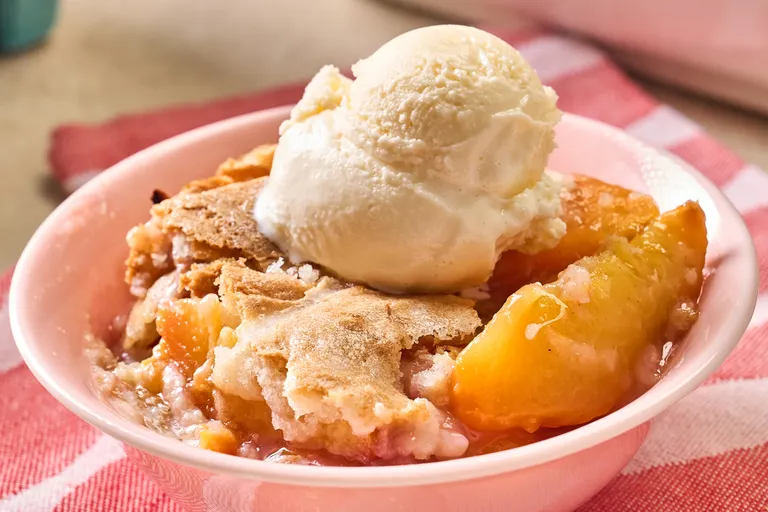

Peach Cobbler

Description
Peach cobbler is a comforting, rustic dessert featuring a warm layer of sweet,
jammy peaches topped with a golden, buttery crust. As it bakes, the sliced fruit breaks down into a rich,
bubbling syrup infused with natural juices and hints of cinnamon or vanilla. Crowning the bubbling fruit is a tender,
biscuit-like dough or cake batter that expands into soft, pillowy clouds with slightly crisp, caramelized edges.
Each spoonful balances the soft, melt-in-your-mouth texture of the warm peaches with the dense,
buttery crumb of the golden topping, creating a classic comfort food best enjoyed with a melting scoop of vanilla ice cream.
The Peach Filling
- Peaches: 4 cups sliced (fresh or thawed frozen)
- Sugar: 1/2 cup granulated sugar
- Lemon Juice: 1 tablespoon
- Cornstarch: 1 tablespoon
The Batter Topping:
- Flour: 1 cup all-purpose flour
- Sugar: 1/2 cup granulated sugarBaking
- Powder: 1 teaspoon
- Salt: 1/2 teaspoon
- Butter: 6 tablespoons melted butter
- Milk: 1/2 cup whole milk
Step-by-Step Instructions
- Prep Heat: Preheat your oven to 375°F (190°C).
- Make Filling: Toss peaches, sugar, lemon juice, and cornstarch in a bowl.
- Layer Fruit: Pour the peach mixture into an 8x8-inch baking dish.
- Mix Topping: Whisk flour, sugar, baking powder, and salt together.
- Add Wet: Stir in the melted butter and milk until just combined.
- Assemble: Drop spoonfuls of the batter evenly over the peaches.
- Bake: Bake for 40 to 45 minutes until the topping is golden brown.
Home